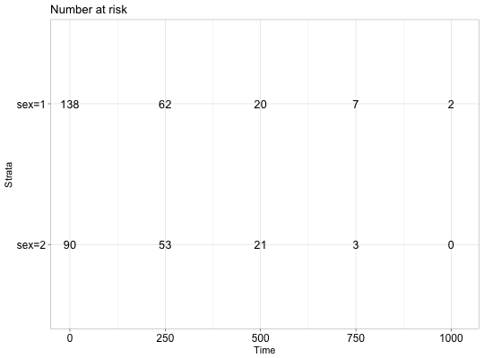
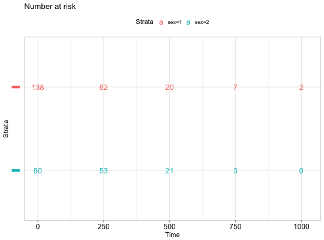
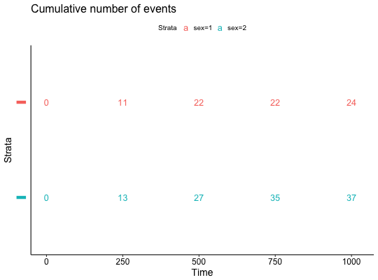

Plot survival tables:
-
ggrisktable(): Plot the number at risk table.
-
ggcumevents(): Plot the cumulative number of events table.
-
ggcumcensor(): Plot the cumulative number of censored subjects, the number of subjects who
exit the risk set, without an event, at time t. Normally, users don't need
to use this function directly.
-
ggsurvtable(): Generic function to plot any survival tables.
Normally, users don't need to use this function directly. Internally used by the function
ggsurvplot.
ggrisktable(fit, data = NULL, risk.table.type = c("absolute", "percentage",
"abs_pct", "nrisk_cumcensor", "nrisk_cumevents"), ...)
ggcumevents(fit, data = NULL, ...)
ggcumcensor(fit, data = NULL, ...)
ggsurvtable(fit, data = NULL, survtable = c("cumevents", "cumcensor",
"risk.table"), risk.table.type = c("absolute", "percentage", "abs_pct",
"nrisk_cumcensor", "nrisk_cumevents"), title = NULL,
risk.table.title = NULL, cumevents.title = title,
cumcensor.title = title, color = "black", palette = NULL,
break.time.by = NULL, xlim = NULL, xscale = 1, xlab = "Time",
ylab = "Strata", xlog = FALSE, legend = "top",
legend.title = "Strata", legend.labs = NULL, y.text = TRUE,
y.text.col = TRUE, fontsize = 4.5, font.family = "",
axes.offset = TRUE, ggtheme = theme_survminer(), tables.theme = ggtheme,
...)
Arguments
- fit
- an object of class survfit. Can be a list containing two
components: 1) time: time variable used in survfit; 2) table: survival table
as generated by the internal function .get_timepoints_survsummary(). Can be
also a simple data frame.
- data
- a dataset used to fit survival curves. If not supplied then data
will be extracted from 'fit' object.
- risk.table.type
- risk table type. Allowed values include: "absolute" or
"percentage": to show the absolute number and the percentage
of subjects at risk by time, respectively. Use "abs_pct" to show both
absolute number and percentage. Used only when survtable = "risk.table".
- ...
- other arguments passed to the function
ggsurvtable and ggpar.
- survtable
- a character string specifying the type of survival table to plot.
- title
- the title of the plot.
- risk.table.title
- The title to be used for the risk table.
- cumevents.title
- The title to be used for the cumulative events table.
- cumcensor.title
- The title to be used for the cumcensor table.
- color
- color to be used for the survival curves.
- If the
number of strata/group (n.strata) = 1, the expected value is the color name.
For example color = "blue".
- If n.strata > 1, the expected value is the
grouping variable name. By default, survival curves are colored by strata
using the argument color = "strata", but you can also color survival curves
by any other grouping variables used to fit the survival curves. In this
case, it's possible to specify a custom color palette by using the argument
palette.
- palette
- the color palette to be used. Allowed values include "hue" for
the default hue color scale; "grey" for grey color palettes; brewer palettes
e.g. "RdBu", "Blues", ...; or custom color palette e.g. c("blue", "red").
See details section for more information. Can be also a numeric vector of
length(groups); in this case a basic color palette is created using the
function palette.
- break.time.by
- numeric value controlling time axis breaks. Default value
is NULL.
- xlim
- x and y axis limits e.g. xlim = c(0, 1000), ylim = c(0, 1).
- xscale
- numeric or character value specifying x-axis scale.
- If numeric, the value is used to divide the labels on the x axis. For
example, a value of 365.25 will give labels in years instead of the original
days.
- If character, allowed options include one of c("d_m", "d_y",
"m_d", "m_y", "y_d", "y_m"), where d = days, m = months and y = years. For
example, xscale = "d_m" will transform labels from days to months; xscale =
"m_y", will transform labels from months to years.
- xlab
- main title and axis labels
- ylab
- main title and axis labels
- xlog
- logical value. If TRUE, x axis is tansformed into log scale.
- legend
- character specifying legend position. Allowed values are one of
c("top", "bottom", "left", "right", "none"). Default is "top" side position.
to remove the legend use legend = "none". Legend position can be also
specified using a numeric vector c(x, y); see details section.
- legend.title
- legend title.
- legend.labs
- character vector specifying legend labels. Used to replace
the names of the strata from the fit. Should be given in the same order as
those strata.
- y.text
- logical. Default is TRUE. If FALSE, the table y axis tick
labels will be hidden.
- y.text.col
- logical. Default value is FALSE. If TRUE, the table tick
labels will be colored by strata.
- fontsize
- text font size.
- font.family
- character vector specifying text element font family, e.g.: font.family = "Courier New".
- axes.offset
- logical value. Default is TRUE. If FALSE, set the plot axes
to start at the origin.
- ggtheme
- function, ggplot2 theme name. Default value is
theme_survminer. Allowed values include ggplot2 official themes: see
theme.
- tables.theme
- function, ggplot2 theme name. Default value is
theme_survminer. Allowed values include ggplot2 official themes: see
theme.
Value
a ggplot.
Functions
-
ggrisktable: Plot the number at risk table.
-
ggcumevents: Plot the cumulative number of events table
-
ggcumcensor: Plot the cumulative number of censor table
-
ggsurvtable: Generic function to plot survival tables: risk.table, cumevents and cumcensor
Examples
# Fit survival curves
#:::::::::::::::::::::::::::::::::::::::::::::::
require("survival")
fit<- survfit(Surv(time, status) ~ sex, data = lung)
# Survival tables
#:::::::::::::::::::::::::::::::::::::::::::::::
tables <- ggsurvtable(fit, data = lung, color = "strata",
y.text = FALSE)
# Risk table
tables$risk.table

# Number of cumulative events
tables$cumevents

# Number of cumulative censoring
tables$cumcensor
